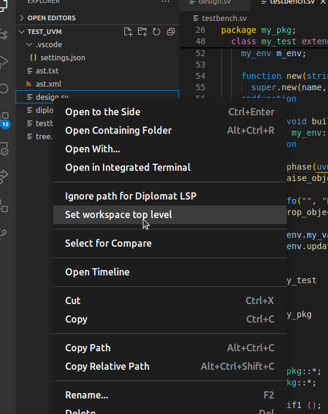
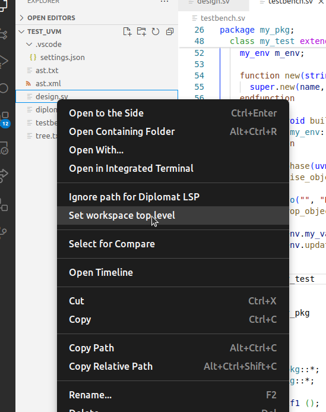

Configuring Diplomat¶
Setting up the source tree¶
When opening a folder for the first time, Diplomat will recursively scan the folder to detect all source file and try to infer a source tree. Without more configuration, you will have multiple top level files which is probably not what is wanted.
This will probably lead to a lot of warnings and errors that may not be relevant. For a simple workspace, this very basic setup may be enough.
Selecting the top-level¶
The selection of the top-level file is made by a right click on the file in the filetree view of Visual Code.

Top level file selection¶

Top level file selection¶
Tip
After changing the top-level file, it may be required to manually reindex the workspace.
To do so, use Diplomat: Reindex command from the command palette.
Excluding files¶
For several reason, it will be useful to remove files or even directory.
This is done by right-clicking on the file or folder to exclude and select Ignore path for Diplomat LSP.
Warning
There is no visual feedback upon ignoring a file and there is a need to reindex (either by using the command or by saving a file).
Saving and loading the configuration¶
Once you configured your workspace, you should save this configuration using the Diplomat: Save the workspace configuration from the server command.
This will save all the workspace configuration into a json file in a location determined by VSCode.
This configuration file should not have to be edited manually as it reflects the result of user commands (except for include paths, see below).
However, the command Diplomat: Open config file will open this file for edition in VSCode.
As it is a fully fledged JSON file, you may format it to facilitate the edition.
Normally, the settings are loaded upon starting the language server.
If the loading fails upon startup (which may happen) or if the file has been manually updated, the settings may be reloaded from the file with the command
Diplomat: Load the workspace configuration to the server
Adding include paths¶
There is no GUI to add include paths to your setup.
In order to do so, you have to manually edit the configuration file and add your paths to either the includes > system or the includes > user sections.
1{
2 /* ... */
3 "includes": {
4 // For files to include through `include <stuff>
5 "system": [
6 "/absolute/to/system"
7 ],
8 // For files to include through `include "stuff"
9 "user": [
10 "/absolute/to/user",
11 "/absolute/path2",
12 "relative/path"
13 ]
14 }
15 /* ... */
16}
Configuration file format¶
The configuration file format is defined by the server in the file lsp-server/diplomat/include/diplomat_lsp_ws_settings.hpp which
defines the workspace properties that are used by the server.
The file is a serialized version of the DiplomatLSPWorkspaceSettings structure.